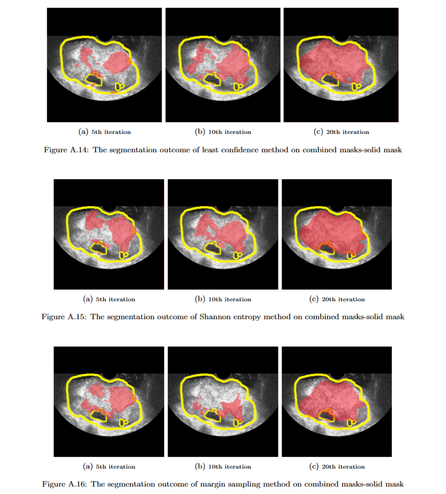
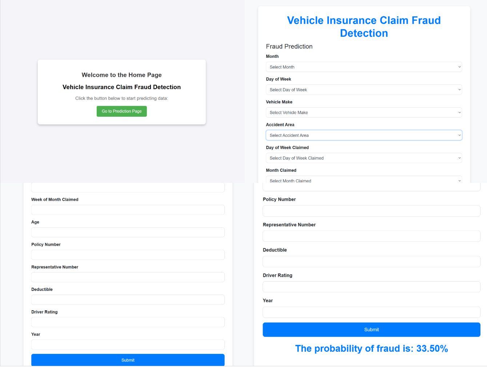

Active Learning for Medical Image Segmentation
For my master’s thesis, I focused on evaluating and comparing Active Learning strategies within the U-Net framework for accurate ultrasound image segmentation in ovarian cancer cases. We (me and my thesis partner) used TensorFlow-Keras for developing and experimenting with the models. The results were remarkable—active learning methods achieved performance similar to models trained on the entire dataset while using less than 50% of the training data.
 View GitHub RepoEnd to End Vehicle Insurance Claim Fraud Detection
This project focuses on detecting fraud in vehicle insurance claims using machine learning, providing a comprehensive end-to-end solution. It includes notebook experiments for exploratory data analysis and training various machine learning models.
The model training pipeline covers all essential steps: data ingestion, data transformation, feature selection, and model training. Additionally, a Flask web app was developed to deploy the best-performing model, enabling real-time fraud predictions for insurance claims.
To ensure seamless deployment, CI/CD pipelines were implemented using GitHub Actions, leveraging AWS for hosting and scalability.
 View GitHub RepoPDF Chatbot with Groq and LangChain
I built a Streamlit-based PDF chatbot using open-source models to process, index, and answer questions from uploaded documents. The solution integrates LangChain components, such as PyPDFLoader for document loading, FAISS for efficient vector storage, and OllamaEmbeddings for creating document embeddings.
 View GitHub Repo
View GitHub Repo